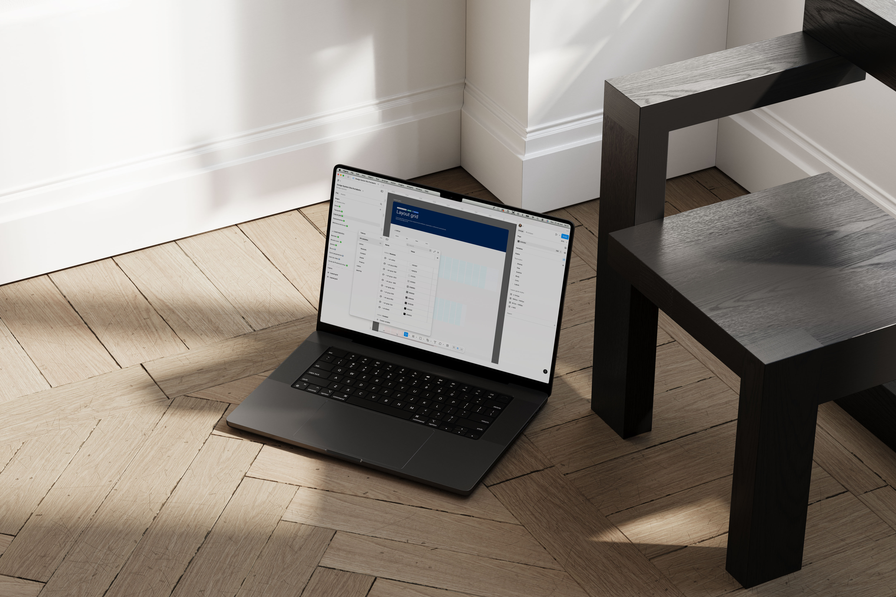
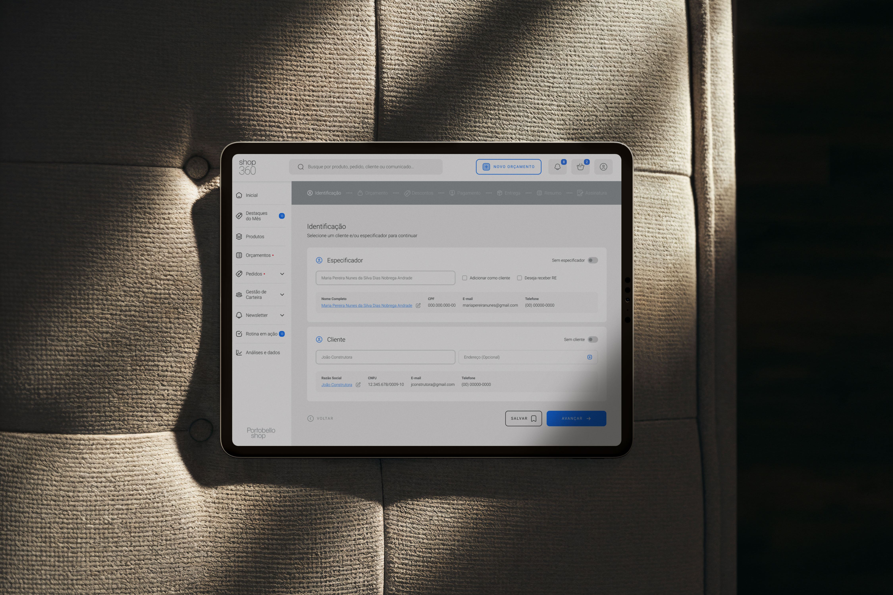

Projetos

Design System Site Portobello
Desenvolvimento do primeiro Design System da Portobello, padronizando a identidade visual, componentes e estrutura do portal. A entrega envolveu a reformulação de mais de 148 páginas, substituição de 400 componentes legados por 146 reutilizáveis e uma redução de 94% no peso das bibliotecas visuais.

Site Portobello
Redesign do site da Portobello Shop, com foco em aprimorar a experiência do usuário e otimizar a estrutura de navegação e gestão de conteúdo. O novo modelo serviu como base para as demais unidades de negócio da Portobello.

Shop 360
Desenvolvimento das interfaces do Shop360, plataforma de vendas da Portobello Shop, com criação das telas do produto desde as primeiras versões e estruturação inicial do Design System.